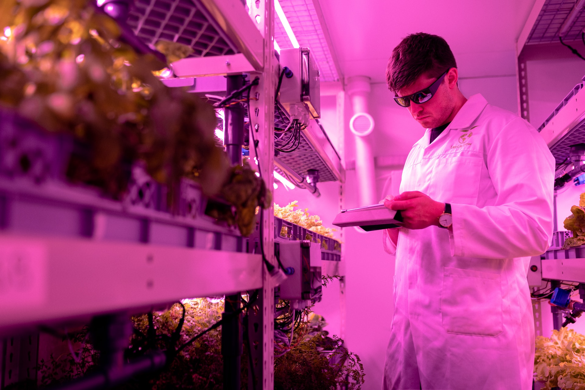

Agrotech: O Futuro da Agricultura Rumo à Alimentação Sustentável
Agrotech, uma combinação de agricultura e tecnologia, está se tornando cada vez mais relevante na busca por soluções para o combate à fome e a redução da insegurança alimentar. Ao aproveitar as inovações da inteligência artificial generativa, é possível impulsionar a produtividade agrícola, melhorar a eficiência da cadeia de suprimentos e alcançar as metas da ODS 2 - Fome Zero.
Fome Zero e Agricultura Sustentável: A ODS 2 busca acabar com a fome e promover sistemas agrícolas sustentáveis em todo o mundo. A agrotech desempenha um papel fundamental nesse objetivo, combinando agricultura e tecnologia para impulsionar a produção de alimentos de forma eficiente e sustentável.
Aumento da população e pressão sobre os recursos agrícolas: O crescimento populacional contínuo e a pressão sobre os recursos agrícolas tornam a segurança alimentar um desafio cada vez maior. A agrotech oferece soluções inovadoras para aumentar a produção de alimentos, garantindo o suprimento adequado para uma população em expansão.
Tecnologia como catalisadora da transformação agrícola: A agrotech, por meio de suas ferramentas tecnológicas avançadas, tem o potencial de impulsionar uma transformação na agricultura. Ela permite a adoção de práticas agrícolas mais eficientes, sustentáveis e inteligentes, abrindo caminho para uma produção de alimentos mais abundante e acessível.
Explorando a IA generativa na agricultura: A inteligência artificial generativa é uma tecnologia revolucionária que utiliza algoritmos complexos para criar novos dados e informações. Na agricultura, a IA generativa pode ser aplicada para otimizar o crescimento das culturas, prever safras e desenvolver variedades de plantas mais resistentes e adaptadas às condições ambientais.
Como as IAs generativas podem ajudar a aumentar a produtividade agrícola: As IAs generativas podem ser usadas para otimizar o cultivo de alimentos, levando em consideração uma série de fatores, como clima, solo e disponibilidade de água. Com base em dados históricos e em tempo real, esses sistemas podem fornecer insights valiosos para maximizar a produção e melhorar a eficiência dos agricultores.
Desenvolvimento de sementes e culturas resistentes com IA generativa: A IA generativa pode acelerar o processo de desenvolvimento de sementes e culturas resistentes a pragas, doenças e condições climáticas adversas. Ao analisar uma vasta quantidade de dados genéticos e ambientais, as IAs generativas podem identificar combinações ideais de genes para criar variedades de plantas mais produtivas e resilientes.
Logística inteligente com IA generativa: A logística é um aspecto crítico da cadeia de suprimentos alimentares. A IA generativa pode otimizar rotas de transporte, reduzir tempos de entrega e minimizar desperdícios, garantindo que os alimentos cheguem de forma eficiente e fresca aos consumidores.
Previsão de demanda e gerenciamento de estoques: Com a ajuda da IA generativa, é possível prever a demanda futura de alimentos e gerenciar os estoques de forma mais precisa. Esses sistemas podem analisar uma variedade de dados, como padrões sazonais, tendências de consumo e dados demográficos, permitindo que os varejistas e produtores planejem suas operações de forma mais eficiente.
Redução do desperdício alimentar com tecnologias de IA: As tecnologias de IA generativa podem ajudar a reduzir o desperdício alimentar ao identificar padrões e prever quando os alimentos estão em risco de estragar. Isso permite uma melhor gestão de inventário e a implementação de estratégias para evitar perdas desnecessárias, contribuindo para uma cadeia de suprimentos mais sustentável.
Inclusão digital e acesso igualitário à tecnologia: Para alcançar a meta da ODS 2, é essencial garantir a inclusão digital e o acesso igualitário às tecnologias agrotech. Isso envolve fornecer infraestrutura, treinamento e suporte técnico a comunidades rurais e agricultores de pequena escala, permitindo que eles aproveitem os benefícios dessas soluções inovadoras.
Capacitação de agricultores e comunidades: A capacitação dos agricultores no uso de tecnologias agrotech é fundamental para aproveitar todo o potencial dessas ferramentas. Treinamentos e programas de capacitação devem ser implementados para educar os agricultores sobre as melhores práticas agrícolas, o uso adequado das tecnologias e a gestão sustentável dos recursos.
Parcerias público-privadas para desenvolvimento agrícola sustentável: A colaboração entre governos, setor privado, organizações não governamentais e instituições de pesquisa é essencial para impulsionar o desenvolvimento agrícola sustentável. Parcerias estratégicas podem promover a inovação, facilitar o acesso a recursos e compartilhar conhecimentos, criando um ambiente propício para a implementação bem-sucedida da agrotech.
Agricultura vertical e cultivo em ambientes controlados: A agrotech possibilita o cultivo em ambientes controlados, como fazendas verticais, estufas automatizadas e hidroponia. Essas abordagens reduzem a dependência de terras agrícolas tradicionais, aumentando a produção de alimentos em espaços limitados e reduzindo o consumo de água e o uso de pesticidas.
Uso de drones e robôs para monitorar e tratar cultivos: Os drones e robôs equipados com sensores e câmeras podem monitorar as condições dos cultivos, identificar doenças e pragas precocemente e até mesmo realizar a aplicação precisa de fertilizantes e defensivos agrícolas. Essa automação melhora a eficiência e a saúde das plantas, reduzindo o uso excessivo de insumos químicos.
Cultivo de proteínas alternativas e carne cultivada em laboratório : A agrotech também impulsiona o desenvolvimento de proteínas alternativas, como carne cultivada em laboratório e produtos vegetais que imitam a carne animal. Essas abordagens reduzem a necessidade de criação intensiva de animais, diminuindo a pressão sobre os recursos naturais e mitigando os impactos ambientais da produção tradicional de carne.
A agrotech, impulsionada pela inteligência artificial generativa, apresenta oportunidades significativas para combater a fome e a insegurança alimentar. Ao aumentar a produtividade agrícola, melhorar a eficiência da cadeia de suprimentos e promover a agricultura sustentável, podemos avançar em direção à meta da ODS 2 - Fome Zero. Com um foco contínuo na inclusão digital, capacitação dos agricultores e colaboração entre os setores público e privado, a agrotech tem o potencial de desempenhar um papel transformador na construção de um futuro alimentar mais seguro e sustentável.
